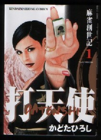

（１２）立ち見
|
打天使といえば、主人公のキャラクターと描写の美しさで、現在σ(-_-)のお気に入りナンバーワン。麻雀コミックのパターンとして、相変わらずやくざの抗争がメインストリーなのが残念だけど、主人公 冬子の美しさに免じて目をつぶる(^-^；

そんな打天使の最新号、冬子の義理の弟、和也が登場する。彼もやくざの若頭。冬子に負けず劣らずの強運の持ち主。今日も利権をめぐって、某やくざと対決する。それを見守る子分が二人。
和也のめちゃくちゃな？打ち回しに、子分二人はハラハラドキドキしているのだが、和也はちゃんとカンドラなんかをモロ乗りさせて勝ちきる。それはいいのだけど、この子分二人、兄貴分の和也の後ろで立ち見をしている。
観戦者のマナーとして、プレーヤーに話しかけない、近づきすぎないなどいろいろあるが、この立ち見も激悪マナーの有力候補。
野球やボクシングなどと違って、盤上ゲームではもともと観戦者などゲームの部外者。それを見せて貰うのだから、それなりの配慮が必要。となればプレーヤーを見下ろすような立ち見など、問題外。少し離れたところに座して観戦するのがとうぜんのマナー。
ましてや見ている相手は、やくざの世界で兄貴分。いや 若頭といえば、あの世界では親分につぐN0.2。「貴様、何様のつもりだっ！」と云って、撃ち殺されても文句は言えん....(笑)
|
（１２）立ち見後日談
|
この対局で和也が完勝。すると次号（5/1号）で悪役が、縁起を担いで卓を替えようといいだした。
イカサマなんぞしたら容赦しないといいながら、和也も卓替えを承知する。で あらためてその卓でゲームが始まったんだが、おお、感心した！。今度は子分二人はちゃんと着席して観戦している。(^-^)
なんとマナーのいいヤクザだ。「撃ち殺されても文句は言えん....」と書いたが撤回する（^-^； どこかのフリー雀荘のメンバーに爪の垢でも飲ませてやりたい。
※先般、つきあいで某フリー雀荘にでかけた。 ワン入りでゲームが始まったが、たまたまσ(-_-)は壁際に坐った。合計でまだ２卓しか立っていないので、残った３人いるメンバーは手持ち無沙汰。仕事しながらも、ぶらぶらと観戦している....
それもいまいち気に入らなかったが、そのうち１人がσ(-_-)の手を観戦しだした。しかしσ(-_-)は壁際に坐っているので、立ち見が非常にしにくい。そしたら無理な姿勢で横から首を伸ばしてのぞき込む....
（おひ）と思ったがダマっていたら、なんども繰り返す。そりゃあヘボがドラでも赤牌でも白ポッチでも、何でもどんどん切り出すので、（いったい何をやっているんだろう）と気になるのは分からんでもない。(-_-； なあに、赤とか白とかは見ただけで嫌いな色なので、目の敵に切っていただけだということにしておこう....。いずれにしてもうっとおしいので、その雀荘は早々に引きあげた。
余談はさておき、打天使をみていて面白いことに気がついた。
この悪役、4/15号で対局が始まったとき、ちびたタバコを吸っていた。
卓が代わった6/1号になっても、まだちびたタバコを吸っている。(^-^) ２カ月 経ってるからさすがに短くなっているが、なんとモチのいいタバコだ。タバコが値上がりしてヒイヒイいってるヘビースモーカーとしては非常に気になる。(笑)
|
三跪九叩頭 投稿日：2007/05/12(Sat)
しょっちゅう観戦するわけではありませんが、 立ち見って、マナー違反の部類に入るんですね（どころか激悪(^_^； ) 初めて知りました
座って観戦するよりも、立ち観戦の方が(場が見やすいために)けっこう離れた距離から観戦できるし、さりげない感じ？を相手に与えると思ってたので、立ち見したほうがよいと思ってました。
|
あさみ 2007/05/12(Sat)
ども、三跪九叩頭さん
まぁ、全然気にならない人もいると思いますが。
しかしフリー雀荘などでは、「立ち見 助言、ご遠慮ください」なんて張り紙も散見しますよね。ということは、やっぱり立ち見されると不快と思う人が多いのではと思う次第。（^-^；
じっさい座り見であっても、見られたくないと思う人がいるようですし。
|
三跪九叩頭 投稿日：2007/05/14(Mon)
確かにどちらとも不快には変わりありませんね(^_^;)
|
あさみ 投稿日：2007/05/15(Tue)
「どちらとも」といっても、たぶん中身は異なるのではないかと。(^-^)
立ち見の場合は、“立って見下ろされる”という事自体を不快と思うわけです。そして座り見であっても“見られたくない”と思う人がいるのは、選択ミスなどの失敗を見られたくない、あるいは自分の打ち筋を知られたくないということだと思います。そこで相手が「(/ー＼)イヤッ、見ないで」ということであれば遠慮するにこした事はないですね。
でσ(-_-)の場合はと云うと、もとより行き当たりばったりなので打ち筋なんてありません。そこで座ってさえしてくれれば、こんなヘタな麻雀でも見たいという奇特な御仁は大歓迎です。（^-^；
|